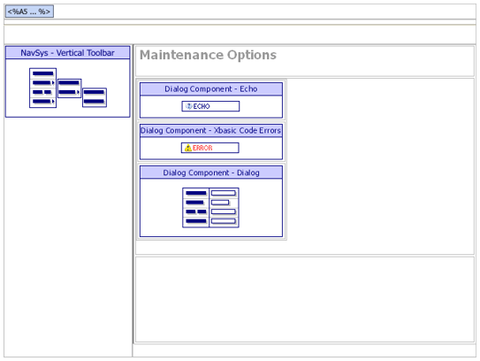
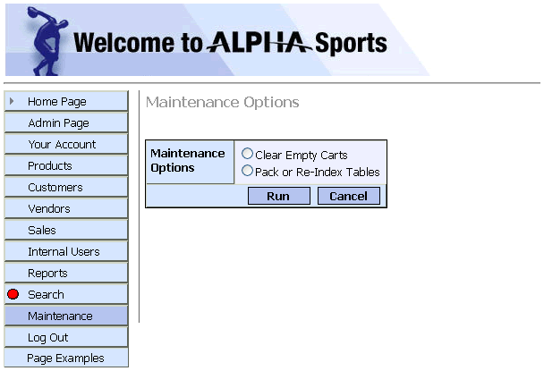

ASWMAINT.A5W
Purpose
The application administrator uses the ASWMAINT.A5W page to select various file maintenance actions.
Description
The ASWMAINT.A5W page contains the DLG_MAINTOPT dialog component. We moved the component code, so it runs code before the page's tag. The reason is that the dialog selection will redirect the user to another page using code in the dialog's AfterValidate event. The code in the AfterValidate event is:
|
if alltrim(CurrentForm.Controls.Options) = "cart" CurrentForm.RedirectTarget = "aswprocessing.a5w" elseif alltrim(CurrentForm.Controls.options) = "PR" CurrentForm.RedirectTarget = "aswpackreindex.a5w" end if |
Options is the name of the radio button control that accepts the user selection.
Two pieces of dialog component code that would normally be in the section:
|
?x_DLG_MAINTOPT.Output.Head.JavaScript ?x_DLG_MAINTOPT.Output.Head.CSS_Link |
are commented out and moved to the output section of the navigation component since that section is in the page's tag.
Links
The Maintenance entry of the NAV_INT navigation component displays the ASWMAINT.A5W page.

ASWMAINT.A5W in the WYSIWYG tab of the HTML Editor

ASWMAINT.A5W in the Browser
Edits to the Page Source
When you look at ASWMAINT.A5W with the Source tab of the HTML Editor, you will see a large amount of HTML and Xbasic code. The HTML Editor placed almost all of it there automatically, as we used the WYSIWYG tab to place the tables, text, graphics, and components on the page. There are a few interesting exceptions, where we changed the page code through the Source tab.
This code in the override section of the navigation component. The location = "Maintenance" statement highlights the "Maintenance" button in the menu.
|
with tmpl_nav_int location = "Maintenance" componentName = "nav_int" end with |
The A5W_INCLUDE() statement is in the top row of the table. It loads TOPPAGE.A5W and displays a standard page header.
|
Page Security Information Login Required See Also | ||